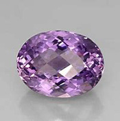

Amethyst is a semiprecious stone that is often used in jewelry and is the traditional birthstone for February.
It is the official state gemstone of South Carolina. Several South Carolina amethysts are on display at the Smithsonian Museum of Natural History

Amethyst is a violet variety of quartz. The name comes from the Koine Greek αμέθυστος amethystos (Modern Greek) The ancient Greeks wore amethyst and carved drinking vessels from it in the belief that it would prevent intoxication.

Brazil where it occurs in large geodes within volcanic rocks. Amethyst is produced in abundance from the state of Minas Gerais in Brazil.
It is also found and mined in South Korea. The largest opencast amethyst vein in the world is in Maissau, Lower Austria.
Used as a gemstone by the ancient Egyptians and was largely employed in antiquity for intaglio engraved gems.
The Greeks believed amethyst gems could prevent intoxication, while medieval European soldiers wore amethyst amulets as protection in battle in the belief that amethysts heal people and keep them cool-headed. Beads of amethyst were found in Anglo-Saxon graves in England. Anglican bishops wear an episcopal ring often set with an amethyst, an allusion to the description of the Apostles as "not drunk" at Pentecost in Acts 2:15
Treated amethyst is produced by gamma ray, X-ray or electron beam irradiation of clear quartz (rock crystal) which has been first doped with ferric impurities. Exposure to heat partially cancels the irradiation effects and amethyst generally becomes yellow or even green. Much of the citrine, cairngorm, or yellow quartz of jewelry is said to be merely "burnt amethyst".